Archives : 2009-12
Shower Radio @ Dec 25, 2009
将近8点离开办公室，眉骨要裂开似的疼，内心烦躁，这样的状态不知会持续到何时，难道这就是今后工作的常态？一个人太想把所有工作都做得完满，就象要让所有人都开心一样不现实，甚至崩溃，不是吗？我用一周的时间喝完一瓶红酒，大惊喜小姐上周末还送了一瓶，明天等Sherry来，我们两就可以抱着这瓶红酒一解疲惫与烦忧，看上两部电影，过个放松的下午。
这一天让我感到安慰和快乐的是和Maggie、问问一起吃午饭，并且收到问问在HK购买的圣诞礼物：MUJI shower radio。Yeah！（咳咳，请各JM控制一下酸意）这下我真的可以在泡澡的时候听到音乐和新闻啦！以后无论何时何地都可以随身携带它，比如加班的周末，比如遛狗的路上，比如做饭的厨房，比如失眠的夜晚。。。随时随地。
我永远追赶不上文艺青年的脚步，连送礼物都无法比拟。但是这些都不重要，重要的是与她、她还有她们在一起度过的美好时光。祝我的女友们圣诞快乐，天天快乐！

还爱包装纸袋上健美的圣诞老头儿！瞧他那两只快站成“一”字的脚，一看就知道有芭蕾基础。

平安夜 @ Dec 24, 2009
对所谓的节日已经没有任何感觉，对那些充满激情过节的人们仰视一下。朋友提前来电话邀请我参加今晚的家中party，据说还让公司的行政搜罗了小节目，朋友策划了整个平安夜的活动，我还是没有去。这个夜晚就象许多夜晚一样平常安静，对于现在的我也是一份美好。
晚上步行到超市买到计划中的黑色鞋油和鞋刷，鞋油2.5元一只，鞋刷4元，如果不是在超市购买，这样的价位真让人怀疑是假冒伪劣品。“哪种鞋油最好？”超市里忙着搬迁商品的店员说：“红鸟。”是的，超市里最好的鞋油是红鸟，只要2元。货币购买力越来越低的现况，能有这么便宜的商品是有点儿新鲜，但愿，它的质量比它的价格更能令人安慰。朋友在围脖里问为何不用透明鞋剂？家中早有ECCO好几种鞋剂，效果都不理想，所以试试用过去那种膏状的黑色鞋油，要把我的皮靴擦得锃亮锃亮的，擦得象CRV汽车那样的黑色大头皮鞋一样招摇，呵呵~
平安夜遛狗是不是会有些不同寻常呢？的确。远处不仅有烟火绽放天空，还有少年们的狼嚎，大概青春就象邻居家的狗一样，在钢琴声响起时适时地来个和弦伴唱，管他娘的音准还是旋律，凑个热闹也好。黑暗中有个人影缓慢地移动着脚步，土豆最先冲上前用被割掉后残留的声带沙哑的发出几声警告，在节日的夜晚，这个散步老人的身影显得落寞又凄凉。
狗狗们的平安夜餐是一瓶罐头+狗粮，最近它们的伙食好过我。因为工作忙家里已经一周没开火，在食堂每日花8元可以吃到一个大荤一个小荤及一个素菜的午饭，前天的大荤居然是三只小鸡爪，打菜的阿姨说本来规定只给打两只，还多给了一只呢，泪奔。。。承包食堂的生意人也忒抠了吧？唠叨完，这就擦我心爱的过膝靴去。
说到过膝靴，还要唠叨几句，昨晚见一伦敦回来的女孩儿，穿着ZARA的过膝靴，波西米亚风格的蚕丝长袖花衬衣，外面一件淡紫色皮草。她问：“你穿的是？”“Ninewest。”“哦，英国也有这个牌子。”多新鲜啊。她的先生学建筑出身，现在一家专业汽车杂志社主管中国区业务。据说对美食和时尚颇有要求，她被先生照顾得很好，每天能吃到不同花样的美食，并且精益求精地打扮自己和她。两人最最差的晚餐也是意大利面和皮蛋瘦肉粥。每天往返家和公司之间需要3小时路程，晚饭结束也要11点了。还要仰视一下她那位职业先生，除了品味和热情还需要充沛的精力，这样的男人在国内早绝种了。讨论了因为水质导致英国男人秃顶多，以及英国以貌取人的问题，真是这样吗？不过这个“貌”还有谈吐、气质等综合因素存在。“国内真是太好玩了，明天晚上我要和表妹去1912泡吧。。。”哦，1912，多么遥远的地方。

可怕的时代 @ Dec 22, 2009
今天看求职信彻底崩溃，某大侠发来的简历照片居然是他把一只手伸进一头母牛生殖器的英姿！之前见过最不靠谱的简历照片也只是一个傻小子举着条蟒蛇傻笑而已（还有一个发来多人合影但不说明自己是哪一位的）我受过的训练不允许我因而对“80、90后”妄加非议，但必须承认我做雇主的时候，赶上了可怕的时代。
--转发自“罗永浩的围脖”
它们的故事 @ Dec 22, 2009
大概因为白天很少陪它们，所以买回许多宠物食品，每每离开家之前会丢一些给他们一解苦闷。今天回来晚了马上拿出上等美味，它们都爱。这么做不过是安慰自己罢了。遗憾的是Luke好象对羊蹄子没兴趣，土豆忘我地啃得昏天黑地，偶而抬头看看我。


Luke好奇地看着它啃啊啃啊啃啊。。。

并且叼起一只藏到门后的墙角，并回头警惕地张望。

忽然Luke气呼呼地冲到土豆窝前把另一只也叼到墙角，趴下来守着。

土豆很无辜地坐在窝里看着我。

我把两只羊蹄子还给土豆，Luke倒也不抢了，在窝外看着它继续啃。土豆啃着啃着睡觉了，Luke叼出一只，用两只前爪抱着大啃特啃起来。狗狗的心理活动真是有意思。

现在俺们家已经四个狗窝了，全部被土豆尿了个遍，然而它到我家一个月后在我即将崩溃之时，土豆的坏习惯嘎然而止，会在狗厕所上便便了。想来还是需要时间相互适应，主人千万不要过早放弃它们才好。当然土豆还有一个坏毛病：啃鞋子。我那双夏天买的顺牌拖鞋已经被啃得面目全非，奇怪的是只要我在家它是肯定不会啃东西的，所以羊蹄子绝对是福音啊，在我上班的时候可以帮助它解决啃东西的问题。
以及外出散步Luke就是它的小护卫，别的公狗狗想和土豆玩，它会坚决赶人家走呢，真是个醋坛子。
大喷嚏 @ Dec 22, 2009
中午和好朋友在食堂吃午饭，一个大圆桌，对面坐了一溜男士。正当我们两人交谈甚欢之时，靠近女伴儿的男士朝我们这边打了一个大喷嚏，“啊欠”！女伴儿的筷子骤然掉落餐桌，一溜男士也忽然没了声音，相视的我们从微笑渐变成木鸡状呆呆地楞了几秒，然后，同时起身，端起盘子离开。
********************************************************
我喜欢大方又精致的打扮，比如下面几款。当然不否认某些周末也有矫情的时候。
午饭时分我们讨论了“花枝招展”这个问题，有些是衣服穿人，有些才是人穿衣服。要让身上的衣服提高自然又自如表达自己的作用，哪怕是疾步行走。由此看来无论谁穿上高跟鞋做一份忙碌的工作，都会受限于它。所以3CM以上的鞋跟会降低你的职业形象。试想，一个在办公室里扭来扭去以保持平衡的女性，纵然你再忙，别人也不会认为你在工作。
亦舒说：“办公室女职员实在不宜过分突出女性特征，这样做会被老板及同事低估工作能力，还是端庄点好，况且披头散发怎么做事，现在讲究效率，妩媚如世界小姐做不出成绩来也不行。”
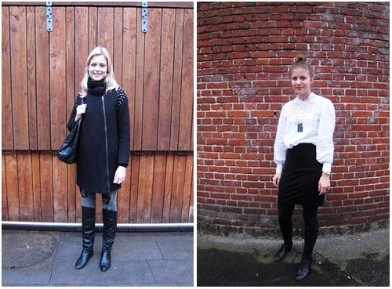

杯具 @ Dec 21, 2009
拍摄于ZURICH。

STARBUCKA进驻中国市场之初，店里还用这种标志的白色马克杯供应咖啡饮品。2000年初我在上海花了40元买了同款的马克杯，用到现在。如今国内STARBUCKS店里很少再见用这种杯子招待客人。在ZURICH最后那个冷雨的上午，用它灌下一杯温暖的咖啡。握着它就象握着自己的杯子一样。
Toyota的杯具 @ Dec 20, 2009
小日本把中国人当SB耍，国产后的Highlander出丑了，12月中旬温州某人驾驶国产2.7排量的汉兰达居然爬不上一个30度的坡道，同行的面包车和CRV都上去了，就剩他的车爬不上去。我觉得那么重那么大的车，2.7排量太小，3.5的应该不成问题，以及四轮的动力分配可能也有问题。
“开车，下坡别在camry前面，上坡别在Highlander后面。”以及现在大家见面不问“您吃了吗？”而是问“今天您爬坡了吗？”丰田公关不久就会开个飞机过来，一到丰田坡就一头栽下来，然后说，这坡连飞机都飞不过去，小车当然是不可能的了。。。。车到山前必有路 有路必有三十度。各个网站Highlander论坛里访客爆多，太有意思了！
据说温州丰田4S店里的销售经理最近也吃不下饭，顾客一来就要将车开到各种坡道上去试，有的甚至还要开到“汉兰达坡”那儿试车。4S店给出的反馈是：“这是城市车，不是专业越野车。”可是拖拉机能上的坡，汉兰达为何上不去？大家都去买拖拉机得了。最近好多车开到“汉兰达坡”那儿去作爬坡测试，浙江平白无故多了一个人文景点了！
丰田公关厉害，全国的媒体除了新华网其它全部封杀消息，真有能力。

-汉兰达坡已经演变为娱乐旅游景点
-爆笑实拍！网友多车测试“汉兰达坡”
-杯具！小面能上丰田汉兰达上不了的小土坡
看看这个视频: 爬90度坡的超牛越野车
忙并快乐着。 @ Dec 20, 2009
周末怎么样都要休息一天，周六决定去南艺看看新生代漫画展。最近工作上超级忙，除了每天加班外，周末也要搭进来，生活质量明显下降。有个同事说他晚上回家会喝点酒才能放松下来睡觉，而我最近躺进被窝要过好久才能入眠，脑子里转啊转啊转啊的。。。这些辛苦只有自己知道。好吧，让我们忙并快乐着。
最爱吕江作品《微笑．中国表情》。

这组作品起初吸引我的是简洁的线条，Sherry说有点宫奇竣风格，故事也有点意思，大致是说一个下半身长在土里的女子（树）与一个人类相遇，男子将她从土壤里拔出来带着她行走天下，开始她的下半身仍然是树根（见下图），后来渐渐长出人类的双脚，可以和这个男子一起行走了。寓意各人体会。

还喜欢这组漫画的风格，讲述跳楼男孩儿的故事。

LAN LAN作品《剪发》，引起我注意的是画中女孩儿象极ziboy的GF，究竟是否是他的GF所画有待查证。作品表现的是女性月经前期，男女双方心理以及情绪上的活动。

以下三副有习作有完整故事，均是我喜欢的风格。


两个女孩儿走在我们前面，穿着一样款式一样颜色的UGG款的靴子，我对Sherry说：“你瞧，好朋友穿得都一样，我们也有一样的羽绒服。”去展览前她在电话里说：“不要和我抢，我今天要穿这件羽绒服去。”可是我们又不约而同地戴了黑色毛线帽。

它是这样一个展览。

爱@他们 @ Dec 13, 2009
周末看过光光喜爱的男演员列表，总结了下他们的共同点是均有双会说话的眼睛，以及忧郁、稍许的颓废与不羁。这些共同点恰好也是我喜欢的男演员的特点，不过我看了下自己喜欢的男演员，感觉处于两个极端。。。说明两个我同时寄生于同一个我中。
***Mel Gibson***
因《Brave heart》对他着迷又崇拜，女人对英雄形象没有免疫力。当然这位英雄还得有男人味和宽宏的胸怀，否则如何装得下世界之大？失望于他主演的《What Women Want》，荧幕牢固的英雄形象之后无法接受生活片中的他。
主要导演作品：
Apocalypto (2006)
The Passion of the Christ (2004)
Brave heart (1995)
The Man Without a Face (1993)
Complete Savages(2004)


***James McAvoy***
因《Atonement 》对他产生兴趣，如果没有影视作品压根不会注意到长着娃娃脸的他。James在《The Chronicles of Narnia 1 》里饰演一只半人半羊（Faun）的配角，呵呵，他一出场就被他那双无辜又有故事的眼睛吸引了，你会觉得那不是普通的一只神兽。以及看过下面这段言论就不难理解他为什么会娶比他大9岁的女人为妻了。
"We're in a horrible, repugnant place now where kids are told it's their right and due to be hugely famous. Not good at their job, not good at anything, just hugely famous. This is not sane.Little girls think they'll be famous if they have vast breast implants and might as well die if they don't. "
近几年出演的电影：
The Last Station （2008）
Wanted （2008）
Atonement（2007）
Becoming Jane （2007）
Starter For Ten （2006）
Wimbledon（2004）
Shameless（2004）


***Adrien Brody***
因《The Pianist》认识他、对他产生兴趣。我觉得他长着一副意大利人的摸样，或者说在我印象中意大利男人就长得这样子。可他是地地道道的美国人，脸上挂着一个鹰勾鼻对于从事表演事业的人不是什么好运气，可是这却并没有影响到我对他的喜爱，虽然这也出乎我一贯审美之外。
很多人可能并不知道他曾主演过德国独立导演彼得·泽尔的作品《Love The Hard Way》，2004年1月份我曾为此写过一篇Blog，这部电影根据我国王朔的小说《一半是火焰一半是海水》改编的作品，整个故事置身于纽约，但原著中对人的精神层面的揭露和分析在电影中得到放大。里面的女主角Charlotte Ayanna的身材完全不输给Scarlett Johansson，五官甜美，遗憾的是她没出演什么有名气的作品。
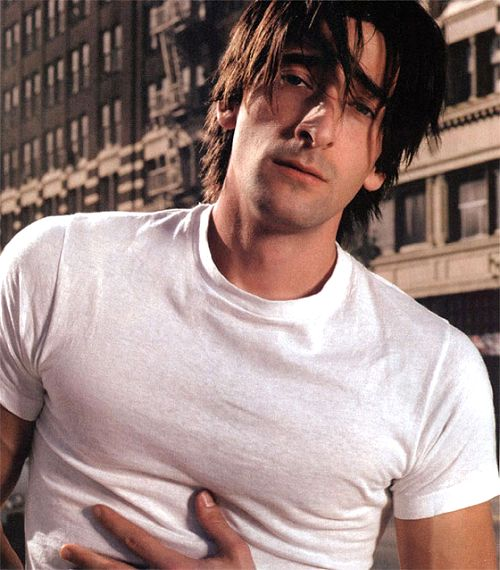
***Jason Statham ***
喜欢上他是从他作为Audi A8御用代言人开始，那车开的很拽很眩很摆很酷，又一英国演员，曾是英国国家跳水代表队成员之一。他出演了过Guy Richie风格的电影作品：《Lock Stock and Two Smoking Barrels》、《Revolver》、《Snatch》，在Luc Besson为他量身打造的《Transporter》系列片中出演一位技术高超的司机，应该也是Audi赞助的电影。以及三部《CRANK》中饰演愤怒的杀手，就是一个死不了的荧幕硬汉形象。

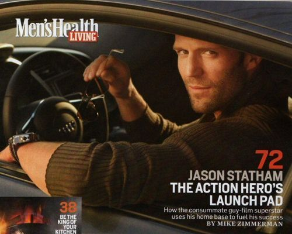
***Johnny Depp***
虽然之前有看过他主演的《Sweeney Todd》、《Pirates of the Caribbean》、《Once Upon a Time in Mexico 》三步曲、《Chocolat 》。。。总之他出演的电影非常多，出道早也是原因之一吧？我觉得他身上有一股邪气，具有鬼魅的梦幻气质。我是在三周前才喜欢上这位演员的，因为他的那部《Public Enemies 》。他除了演技精彩之外，情史也颇为精采，具有“好莱坞坏男孩”之称，甚至还被美国小报写成魔鬼的化身。
惊曝人眼球的是1994年，他居然与Kate Mos相恋，性格如此强的两个人虽然深深相爱，但却并不适合在一起。据说某次争吵之后，性格刚烈的Johnny Depp把高级酒店2000美元一晚的套房砸了个稀巴烂而被捕。他现在的太太是位模特，反正不符合我的审美~
耍酷耍成这个摸样不容易呢，超爱这张。

***孙红雷***
“有一种狂是来自苦难，没有生活感悟的表演只能是苍白的。”他曾经是霹雳舞教练，不知道吧？喜欢他的演技，不是因为某部作品而注意他，就是他一出现在屏幕上，我就立刻被他的表演吸引了。所以他演什么都无所谓，看他表演就觉得过瘾，很有张力和韧性，把握自如。记得有位戏剧学院的老师曾说过：“演技方面大家不会相差太大，最后还是演员人格魅力的吸引。”

***权相佑***
听说韩剧的编剧们是一群在家没事的老大妈，估计每部韩剧都能造出一颗新星。我是因为《天堂的阶梯 》喜欢这花样面容的权像佑，以及对比国外明显摄影，亚洲写真真是缺乏力度和个性。花样美男比较适合青春期的审美，可是他的体型很好啊，可以做时装模特。以及快要不是我的那杯茶了，想起他就觉得单薄。

瞧瞧，区别在哪儿？

动作一摸一样，气质不同表现也就不同。Johnny Depp可是坐在煤气灶上，脚踩烤箱门，手上还夹着根烟，这就是腔调！哈哈哈哈~~~~~
五代已死，五代万岁！ @ Dec 13, 2009
周六一大早准时在工作日早晨的8点醒来，周末唉，这么早起床太亏了，可是再继续睡又睡不着，于是拿起手机瞧围脖。
一早看到洪晃大姐的围脖上愤愤地发表电影《三枪》的观后感：
**三枪基本上就是骂中国电影观众是傻B的片子；
**谁槛三枪谁傻B，我今天当了三十分钟傻B还交了八十元，劝没去看的人就别去找挨骂啦；
**但愿，五代已死，五代万岁！
**说得比我文明多了，但是《三枪》是中国电影人的耻辱，也是中国电影得耻辱。我知道我越这么说，越有人会好奇地去看，作为观众，这个电影就是在侮辱你的智商。真的。
她指的是生于80后，导演处女作惊悚片《午夜出租车》的张江南导演说的：《三枪》一帮毫无创作诚意、毫无职业道德、毫无对“电影”和“电影观众”表现出哪怕最低限度尊重的“电影投机商人”，对观众和电影本身极尽亵渎和侮辱之能事的，对善良的观众进行地极其廉价而狂妄的、明目张胆且大张旗鼓地公然诈骗行为！作为观众，我出离愤怒！作为电影从业者，我感到莫大耻辱！
张江南回复@洪晃:《三枪》是中国电影耻辱的一页，之前烂片达不到这高度。因为“谋”是中国电影（人）的名片。若奥运会的执导还为从业者挣了面子，那么这次就是彻底的出卖。愤怒，是因为感到一种前所未有的背叛。这一耳光闪在脸上，隔夜，仍火辣辣的。其对行业的尊严、信誉之损害难以估量。
张江南：为了抚慰被《三枪》伤害的伤口，昨半夜看片回来赶紧找个好片救命，结果还真有效。在此推荐一下，以表何谓商业片，国内不公映，可买盘或下载：杜琪锋《复仇》——高品质制作，创新的故事，高级的爱狠情仇，视听盛宴，除此还有 情怀，人性冷暖，和感动。都是名导，差距人心自有掂量吧。
冯小刚、宁浩缺席的贺岁档，内地导演难唱主角了，陈可辛制造《十月围城》等一干香港导演，俨然这次是要给内地导演上课，展示：什么是商业电影的职业范儿！牛皮不是吹的，电影也不是。
有人捧《三枪》臭脚，说是堪比春晚，扯淡！别侮辱春晚好不好，春晚好歹真金白银砸了钱的，台上一秒钟，台下十年功，是谁都能上的么？我看，《三枪》充其量，就是一新开张的大型洗浴中心的堂会。那的二人转演出都这样~~
我看这位年轻导演水平也高不了，上面那几段话有多少个错别字，真应该替他数数，还是八零后就好这口？说到烂片，昨晚上我看《CRANK 2》，白灵在里面演得很卖力，一定是经济危机，否则怎么会接这么个角色？不过就没见她演过什么好角色，这次更是把我恶心个够！张艺谋电影我基本就没感兴趣过，外国人喜欢那是因为新鲜。
发现 创意之美 @ Dec 12, 2009
看了电视上“彩虹糖”的三个广告，第一次因为广告想去买来尝尝，创意太好玩了，用的是极普通的演员，好象连妆都没化，表演痕迹也是淡的很，看完第三支“彩虹糖”广告才顿悟这糖是让人一解烦忧的产品，以及今天“苏菲”广告里的两只兔子～哇～想从电视里揪住耳朵拎出来玩一玩。我喜欢那些有创意的橱窗和广告，可能因为自己太缺乏创意的缘故。在标准和程序井然有序地将人性分割成方块和三角，贴上“经典”标签打包出售，也许，包装上还有那句同样经典的台词“我更爱你现在备受摧残的面容”。在没有领略过Bauhaus之旅之前，这些在旅程中发现的各种小创意也一样能满足我那颗始终好奇又易被拨动的小心灵。
ZURICH班赫夫大街上BIG BOY商店外的橱窗。

SWISS MADE橱窗里的产品简洁抢眼，价格不敢恭维。瑞士的中产阶级以手工制造者为主，在瑞士可以找到许多创意设计，不去个两三回是无法感受透的。

班赫夫大街WOLFORD丝袜广告，诞生于1949年的WOLFORD，主要经营丝袜和内衣产品，现在也有了泳衣的生产线，该品牌不是将所有美好、性感、诱惑的元素融在一起的大杂烩，也不针对方方面面的市场阶层。WOLFORD只精选与众不同、新颖的素材，是一种针对少部分人的较奢侈产品。
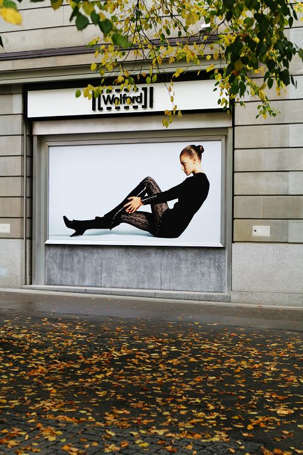
布拉格书亭外拍摄的摇滚杂志封面，这照片编辑的忒有想象力了。

在PUDBEST和THUN的男女厕标志。

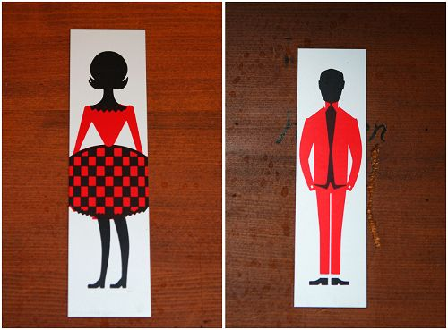
位于ZURICH的TEUSCHER巧克力店的橱窗，万圣节前夕，橱窗里几乎清一色南瓜小巫师的节日装饰，可爱又精巧。

瑞士籍著名时尚摄影师Michel Comte在时尚界已经25年，是当代全球四大最富盛名的摄影师之一。他被世人誉为“一个在视觉与心灵间行走的智者，一个以美的名义创造美的真实的人”。其作品常在Vogue, Vanity Fair, Interview, GQ等出现，摄影的对象都是全球著名的美女。
他于1954年出生在苏黎世，早年受训为一位绘画修复师，直至1979年他的人生有了重大改变，那年他受雇为时尚品牌Chloe拍摄平面广告，Karl Lagerfeld正是当时Chloe的创意总监。Michel Comte从未上过正规摄影课程，完全依赖自身天资和实践磨练。1981年，他搬至纽约，很快就找到自己的位置，成为美国的商业广告领域最具才华的摄影师。在过去的5年间，Michel Comte的作品流转于各大博物馆和画廊，成为他们的主要展出对象。2009年8月1日起，比利时布鲁塞尔Young Gallery将为庆祝Michel Comte从业30年举办回顾作品展。
如果你正好在展览期间去瑞士，有兴趣的话不妨去参观一下这位先生的作品。
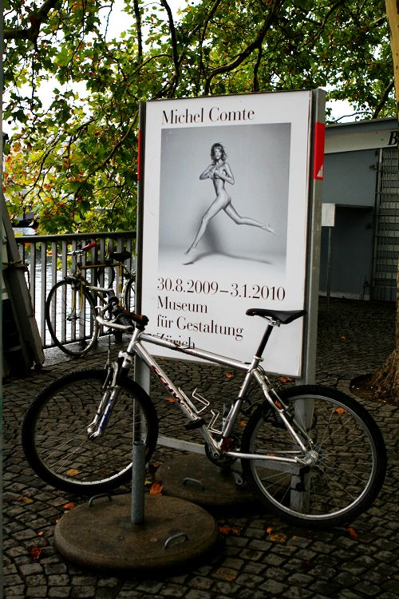
呵呵，宠物店外的广告牌，狗狗也烫发呢~
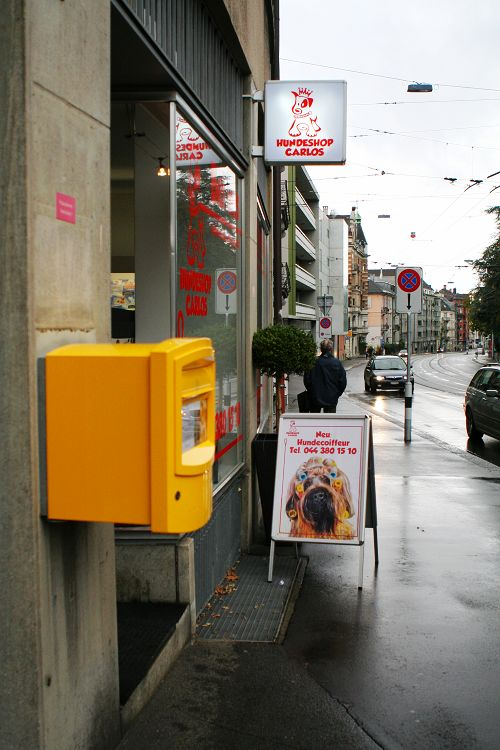
ZURICH大牌橱窗里的模特，长统丝袜别致的设计不久大陆也会流行起来。

香港NOVOTEL酒店大堂的餐厅，那个高耸的玻璃酒柜和贴花的玻璃墙搭配在一起清爽雅致又多了点奢华感，装潢提升了餐厅档次。

从Cesky Krumlov小镇出来，有个广告牌竖在茂密的树林里，它原先的创意所表达的意思没看出来，倒是看出来创意上的创意是张笑脸。
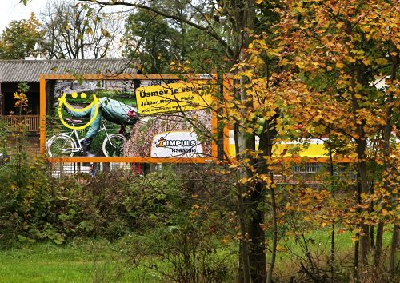
有天晚上我一个人从金钟廊步行穿过香港公园，路上遇见一位穿着黑色礼服扎着领结的老先生正在路边抽着雪茄，好象参加什么酒会中间跑出来抽烟休息一下的。在大陆大概只有在影视剧里才能见着扎领结的猥琐男人。可是这位我在现实中遇到的扎领结的老先生就象欧洲电影里那些风度翩翩的绅士。
我只知道领结要比领带更隆重，传统上，领结要配更正式的礼服在隆重的场合下，它被认为是唯一正统的领口衣饰。领结在流行文化中，也被视为有内涵的象征。这是ZURICH商业街一间橱窗里的花领结，上面织着各种冰淇淋和雪糕的图案，好Q啊。

这套首饰总价CHF8200.00，折合人民币含税价57400.00，反正也不是平时佩带的。它们在木头的粗犷衬托下经典又性感！不知道从什么时候开始流行大大的一颗宝石、钻石、装饰石、合成石。。。随便什么石头，只要是大大的一颗在戒指上的设计。前年为了拥有一颗大大的茶色水晶戒指，不惜用新品换走营业员手上的旧戒指，喜欢的前提下旧的也可以。戴这种款式的戒指不方便从包里掏东西，不方便将衬衣塞进裙子。。。利弊总是同时存在的。
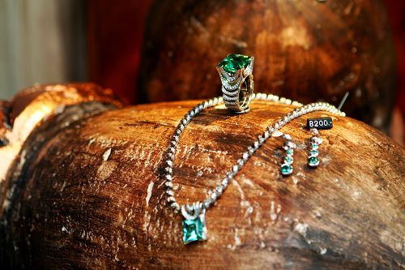
FORGOTTEN PRAGUE。。。被遗忘的布拉格。。。可能又是什么展览吧？
MTR香港人说的地铁，墙上的卡通画是为庆祝香港地铁建立30周年纪念。

维也纳供市民与游客使用的公共自行车，上面有醒目的黄色标志。

布拉格沐浴用品店的橱窗设计，大概是指产品均为纯天然原料制作。
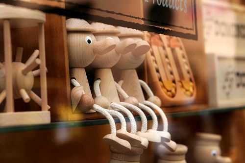
加班 @ Dec 12, 2009
周六带着土豆来加班，它象一尊雕塑一样坐在椅子上看着我，乖得不行，加班的同事不少，有人笑嘻嘻的来看它摸它，它还是很乖地坐着。以及土豆现在越来越适应新家，越来越融入这个家，便便也知道在散步的时候或是在狗厕所上解决。
我把电脑从办公桌的右角落移到中间，一来离自己比较近，帮助不断下降的视力；二来不用每天扭着脖子工作，希望能提高工作效率。我知道往后工作会比以前忙碌许多，平时陪伴它们的时间少之又少，如果平时能带着爱宠上班，该多和谐啊！

用厨房剪给它修的胡子，只是尾端有些钝，不那么美观，可是进食的时候胡子不会拖进食盆里，卫生许多。

上述图片用手机拍摄，发到围脖上。以及在围脖上每天追着看问问、大惊喜和小原子在HK的行踪，要是还有假期真希望和她们一起走，一起逛，她们去的地方蛮有意思，虽然HK就巴掌那么大，每个人却能玩出自己的花样来。所以说有意思的是人，不是吗？！期待她们回来，看看她们眼中的HK是个什么样子。
工作日 @ Dec 11, 2009
晚上到家只做了一件事，给两只狗洗澡，不晓得为什么一到家连口气儿也没喘就带它们出去遛，也许白天嫌自己不够忙？遛完直接拖进浴室，先给大的洗啊吹的，小的站在浴室玻璃门外安静地看着。给大的搞完卫生然后是小的，一切结束我的腰也直不起来了，时间指向21：49分。如果不仔细想也想不起来自己是不是吃了晚饭？的确吃了，固元膏+稀饭+板栗馅的小饼，吃完就睡。
这样的一天属于自己的时间总是苍白又匆忙，一个上班族要全心全意投入工作最好不要有牵挂，一切都以“快捷”为主，加班也不要有心理负担，不要想着回家做饭，盼着你回家的几双眼睛，买什么菜看什么碟谈什么情逛什么店。。。总之，这样你就可以毫无牵挂地沉浸在工作中。可是这种没心没肺的日子大概只在青春期才有吧？
最近又一风华正茂的朋友准备辞职，打算休息一到两年，皆因太累。想想这份工作的繁杂，与那些运气好一工作就捡到大皮夹子的人简直不好比，优越感不过是错觉而已。所以星期一到星期五，我总是忙忙碌碌，烦躁又快乐，勤劳又勇敢。
拍摄于ZURICH

洗衣房 @ Dec 09, 2009


距离 @ Dec 08, 2009
这时候洗完澡坐床上，边吃苹果边用手机写博，真惬意。我有个同事这两天下班搭我的顺风车回家，以前也经常搭，可是以前都没有今天忙，都是“再等一会儿”让我等到不耐烦。今天我们谁也没等谁，居然过了一个半小时下班时间，还破天荒一起去超市买了菜。。。晚饭结束已经九点。
又一次做了鮰鱼炖老豆腐，超市胖阿姨杀鮰鱼的过程真是血腥，每次看得我龇牙裂嘴心惊肉跳，尤其用工具敲。。。不对。。。应该是砸鮰鱼脑袋的时候，砸一下不行再砸第二下第三下。。。恐怖到感觉是砸在我脑袋上，活蹦乱跳的鮰鱼象人一样口吐鲜血。。。姐妹们吃饭时好象听到某人讲不吃活的动物，只吃死的，以及断断续续“佛教。。。放生。。。”之类好似天堂传过来的声音，对一个热爱肉食者显然是地球两端的距离，但这个距离还是令超市里的我望着蹲在玻璃柜里的牛蛙纠结了一下，算了，实在不忍心看着它们被活生生的剥皮，改做仔排汤吧。。。我不晓得佛教里如何阐述这一切因果，也不想知道，对于无宗教信仰的人，还是顺其自然吧！
@12.09.2009

淘朋友 @ Dec 07, 2009
午饭后已经下午三点，五点和几个女性朋友约了吃饭，于是将车开到南图停车场，在车上睡了一个多小时，这是我第一次到南京新的图书馆，一个无法静下心来阅读文字的人面对如此有文化的场所也不能静下心来培养感觉。提前半小时坐进饭店，给各人发短信通报，她们都在来的路上，好在不一会儿人也陆续到齐。席间似乎都忘了围脖。
那么多年过去，我们与他人有离合，有持续交往，朋友是淘出来的，有些人一开口你就知道与她气场合不合，有些人相处下来才知道是不是有共同语言，那些矫情的势力眼。。。热衷家长里短，蜚短流长之人永远也无法留在自己的朋友圈，以及不擅于用智慧分析不善良的人也要远离。淘朋友就象淘宝贝，淘到喜欢的亦被对方真诚相待，令彼此快乐，淘的过程可能会有伤害，但一定会让自己成熟，总有一些会成为你真正的好朋友，不是吗？友谊最主要的标准其实和爱情一样，就是在一起是否快乐。所以上面那些观点也都不重要，如果两个好朋友在一起撇着嘴讲是非、讲名利、讲男女关系，能讲得很满足、很快乐，也是友谊的一种。
我带了个卡片机随便拍了几张，大家渐渐熟了，聊天气氛真是活跃，我们六个人的声音也真的很大，每次见面都很开心，这次更是。。。笑作一团，当时我在想多希望这样的快乐能长久一些再久一些，把对方都淘成自己的宝贝。

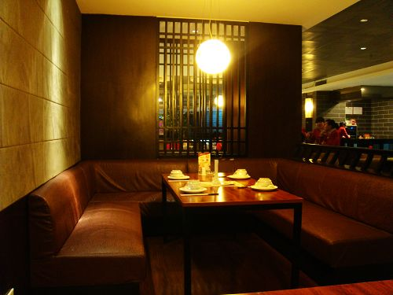


@Thun-3 @ Dec 07, 2009
到达THUN镇。


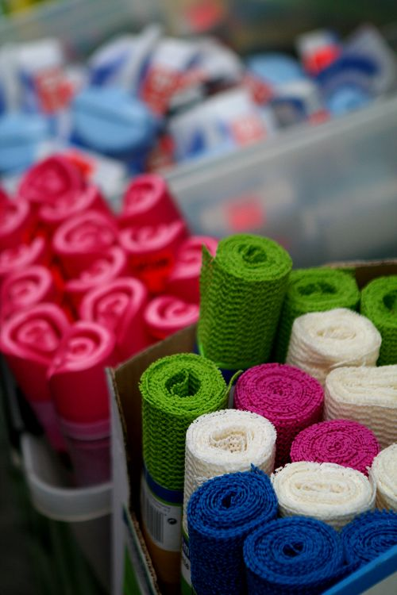
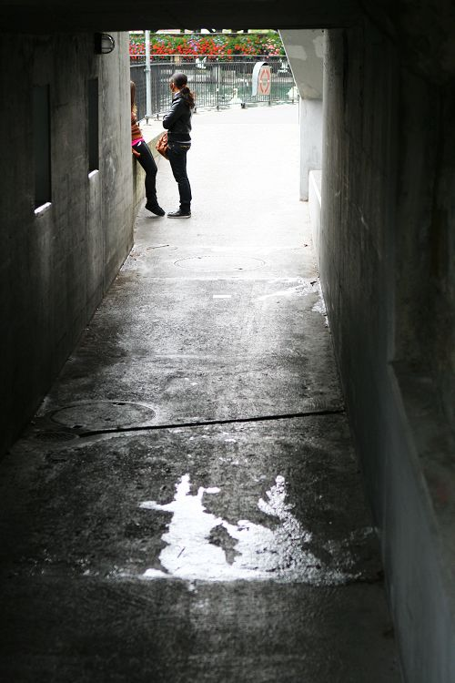

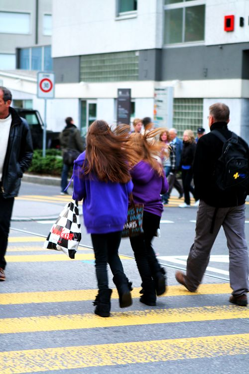


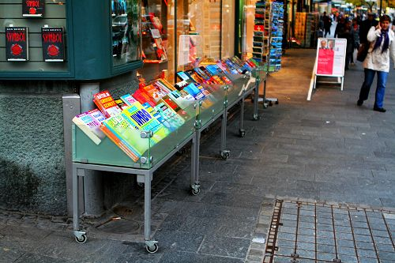


额滴个神呐~ @ Dec 03, 2009
听说《蜗居》禁播了，晚上在围脖上看着问问、WANZE和SHUWUA讨论《蜗居》，一会儿一条围脖，一会儿一条围脖，急得我出汗，楞是没看懂他们到底说的啥，这热烈程度可以开场热气腾腾的研讨会了。转念一想，我那同事怎么还没把《蜗居》的碟给我啊？然后我在围脖上打摆子似的说了十几遍“你俩当我是透明人好了~ ”
shuwua：算了，就说了吧。我觉得有一日中国拿出个男人到世界上去比，宋思明算一个，除却那些所谓制度造成的问题，在中国文化这个大缸子里，孕育出这样一朵就算是恶之花也是难能可贵了。他的顾全、矛盾、复杂、隐忍却不乏干净、纯真的人性，是那么迷人。世界上没有任何一个其他国家可以造就这样一个男人。
陈问问：宋思明不是为自己活着的一个人。他爱家庭。对情人又一片丹心。情债难还，任谁都没办法，谁让女人都爱真诚又深情的男人。我以为他在他的这个位置上，已经做到99分了。很多男人权势没有，猥琐第一。宋的人生如果不是悲情的戛然而止，似乎也很难有更好的去向。
wanze：送死命——写错了，宋思明情感故事的开头告诉我们：处女情结要不得；宋思明情感故事的结局告诉我们：重男轻女的思想要不得！这整个一反封建思想的电视剧啊！教育意义深刻着呢！
此时土豆蹲我腿上，LUKE哼哼唧唧地来回转悠了两个多小时（它要我和它玩球），我已经被它俩粘成万能胶。大惊喜小姐在围脖上策划着去HK豪购明细，LX、GUXXX、EXXX、OMXXX....一边围脖感叹新房子的车位涨15万了...现实版的蜗居啊？额滴个神呐，围脖被俺们整成聊天网站了。大惊喜小姐围脖说：“是你不上MSN啊，我每天晚上双枪和小原子陈问谈事情。”不就去HK那点事儿吗？连枪都使上了，佩服~怪不得每次见到大惊喜小姐我总是笑得合不拢嘴呢~
额滴个神呐，有人居然花痴此人，我刚看过他演的《夜市》，他没出场前非常爆笑，他那脸一露出来就缺乏幽默感，现在才明白这是《蜗居》效应啊？以及劝大家都别对《倔强的萝卜》抱有幻想，那不是《疯狂赛车》和《疯狂石头》的导演，所以这部片冗长又拖沓到让我不情愿地分两次看完，黄勃接错本子啦~

上网真的把其他美好的活动都给挤扁了，还会被整出颈椎病、缺觉、迟到和上网综合症，以及考试通不过之可能。幸运地是几个夜猫子一块儿，恶作剧也快乐呐。只是恶作剧时我怀疑自己究竟过了多少个生日？用大惊喜小姐的话讲：永远童真吧，多难得！
围脖上一张有趣的图。

微车 @ Dec 03, 2009
在欧洲旅行期间除了拍下许多狗狗的照片，还拍了很多汽车照。
分享这些超Q的微车。


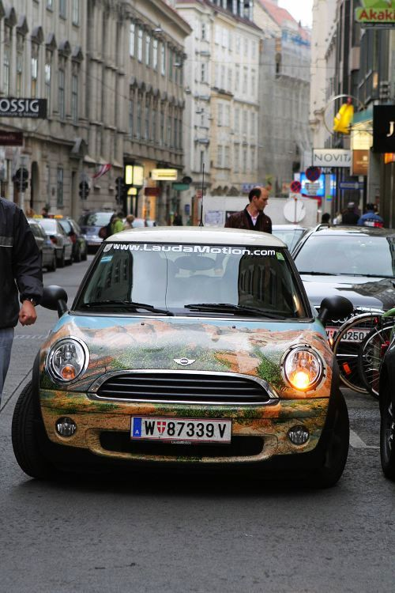
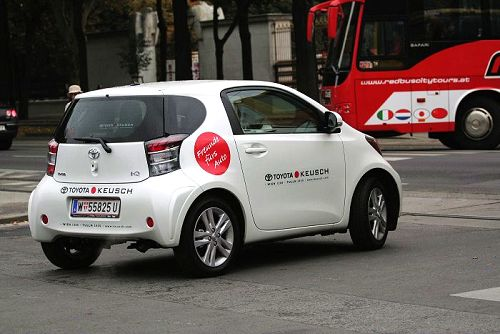


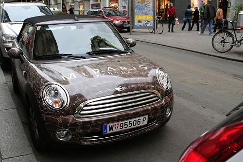
FIAT500明年即将在中国上市，这次旅行在维也纳看到这款车，其他城市倒没发现，这款复古小车有“史上最美微车”之称，配有1.4排量发动机，6速手动变速箱，预计售价在20-25万左右，性价比和MINI一样不高。不过超爱白色操控台设计，太Q了！
第二排左边为目前发售的FIAT500，其余三张照片均为老款车型，恰好新老款停得不远，幸运地被我拍个清楚。

来自官网的FIAT500敞篷版照片，以及各种规格下的英国售价。
1.2 Pop：1.13万英镑
1.4 Pop：1.25万英镑
1.3 Mjet Pop：1.27万英镑
1.2 Lounge：1.27万英镑
1.4 Lounge：1.39万英镑
1.3 Mjet Lounge：1.41万英镑
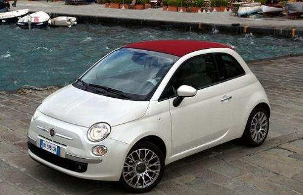
FIAT500内部真是超越传统车的设计。
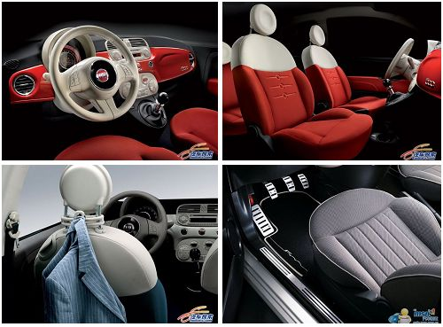
它不是双环小贵族，是真的SMART。国外卖8000欧，国内卖16-20万吧？如果我没记错的话，超不值！电动版Smart将于2012年上市，新车将只在欧洲和美国的主要城市发售，先期可租赁，这要放在国内，那简直是天大的喜讯！
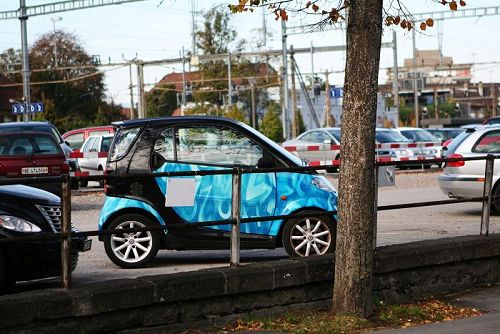

加长版MINI。

午后 @ Dec 03, 2009
阳光虽好，火气却大。牙龈有点肿，睡一觉又下去了，嘴唇上有火气，内心也有。兴奋又暴躁，压根不能安心体会细水长流的午后，做任何事情都象去赶集，匆匆忙忙又找上我，静心听音乐看电影拍照，慢悠悠买菜做饭遛狗。。。这一切都因为你必须工作、没有长辈照顾而不可避免的变成一个控制欲强烈的上班族！可是你又不能没有它，没有它将面临“无序”。所有1到10再从10-20。。。都需要计划需要理性执行，想起小时侯老师教我们“烧水的同时可以看书。。。”合理安排所有事务提高效率，控制欲就是这样被培养出来的，象马路上的交通信号灯、虚线、实心线、斑马线和双黄线。如果我可以从这些线条里挣脱出来，那我就不能使用这条笔直又宽敞的马路，还是。。。默默羡慕一下退休的老人吧！
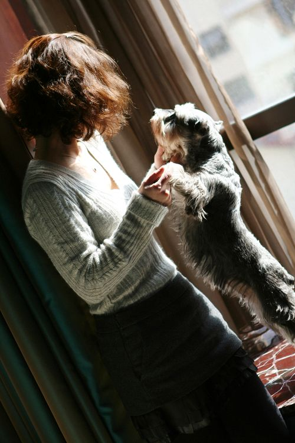
@Thun-2 @ Dec 02, 2009
从OBERHOFEN前往THUN镇的路上。
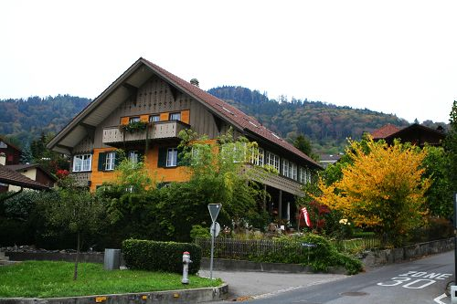

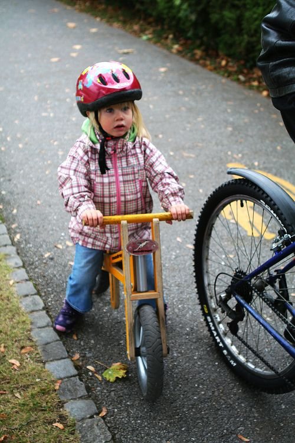
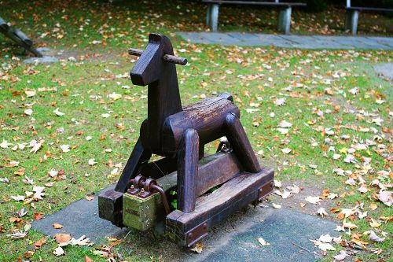


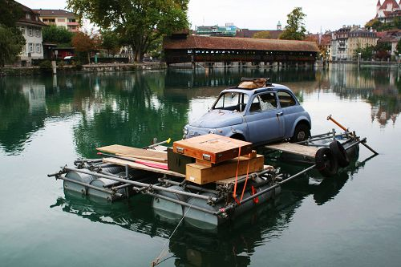


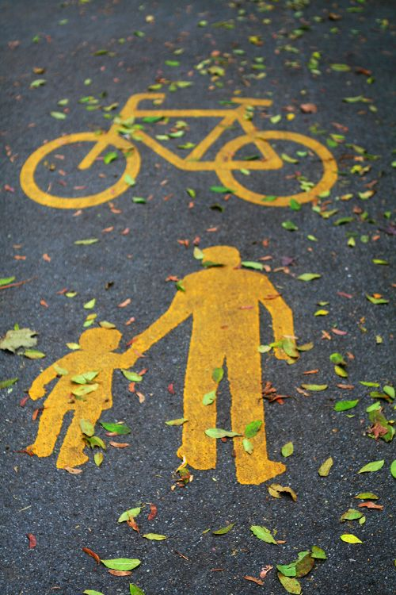


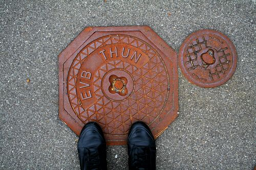
The Cost of Love @ Dec 02, 2009
做了一个奇特的梦，梦见自己走入一条窄巷，两边是小时侯记忆里的矮屋，可梦里我认为那是一个村庄，在这些房屋中发现两座房子，一看就不是农民家，应该是从城市搬入乡下居住的，铺着地毯，摆放着艺术感的装饰，家里干干净净，我流连在这两座房子里心生向往，多希望有一天也可以住到这样清净的地方。醒来后想着中国平原的农村就算了吧，以前去湖南旅游，那里的山岭峻峭，溪水绵延清澈，植物葱郁繁茂，火车经过一个山凹会忽然出现一两户人家一两条小瀑布，我那梦中的世外桃源。
最近狂爱Chris daughtry的歌儿，如果你曾着迷于American Idol就不会忘记这位光头歌手，和他充满爆发力且韧性十足的声音，07年我窝在电脑前看的American Idol还是朋友刻的碟，当年的他打扮成牛仔摸样参加第五届American Idol的比赛，那时他所在的乐队压根没有名气，当他唱完走出演播厅，他那年长的GF带着孩子冲向他的怀抱兴奋又甜蜜地情景，他的声音以及他那爱恋着的离异带着孩子的女人给我留下了深刻的印象。Chris Daughtry是同届American Idol中第二位发行正式专辑的歌手。作为Chris Daughtry的个人乐队《Daughtry》的首张正式专辑，在06年全美发行首周的销量达到30万4千张，夺得了当周Billboard 200专辑榜的亚军，至今他只出版了两张专辑，第二张专辑《Leave This Town》。
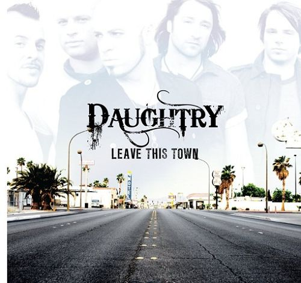
获奖纪录：
2006年第5季美国偶像第四名
《Daughtry》成为继披头士以来卖得最快的一张摇滚专辑
2006年专辑上榜第3周夺得当周Billboard榜销量冠军 并持续热卖长达半年
主打歌“It’s Not Over”的MV夺取榜首地位
Chris daughtry -learn my lesson.wma

tonight the sunset means so much
the one thing that you know you'll never touch
like the feeling, the real thing
i reach out for that sweet dream
but somehow the darkness wakes me up
i've felt this emptiness before
but all the times that i've been broken
i still run back for more
you'd think that i'd learn my lesson by now
you think that i'd somehow figure out
that if you strike the math,
you're bound to feel the flamee
you think that i'd learn the cost of love
paid that price long enough
but still i drive myself right through the pain
yeah, well it turns out,
i haven't learned a thing
sometimes i think i'm better off
to turn out the lights and close up shop
and give up the longing, believing in belonging
just hold down my head and take the loss
you'd think that i'd learn my lesson by now
you think that i'd somehow figure out
that if you strike the math,
you're bound to feel the flamee
you think that i'd learn the cost of love
paid that price long enough
but still i drive myself right through the pain
yeah, well it turns out,
i haven't learned a thing
you'd think that i'd learn my lesson by now
you think that i'd somehow figure out
that if you strike the math,
you're bound to feel the flamee
you think that i'd learn the cost of love
paid that price long enough
but still i drive myself right through the pain
yeah, well it turns out,
i haven't learned a thing
you'd think that i'd learn my lesson by now
you think that i'd somehow figure out
i haven't learned, i haven't learned
i haven't learned a thing
Amazon服务 @ Dec 01, 2009
国内别说网上购物的服务质量了，面对面的服务也没这么好，真正的好还要看售后，这才能体现出商家的实力和管理能力，大家卖的东西差不多，服务细节会让自己更胜一筹！也所谓有多少钱做多大生意，国内大多数商家的确比以往有了更多的服务意识，更多的也只是停留在图有其表的“意识”状态中，不愿吃亏赔付或没有能力赔付也是事实！更何况仅仅是一本书的封面有了皱折？商家一定嘲笑这位消费者脑子有病、挑毛拣刺。。。恰好我们公司给Amazon供货，每次出货前都要做摔箱实验，从一定的高度将箱子丢下去，对包装要求颇高，不过邮购商的采购量总是大不过超市和进口商，所以Amazon这样的客人也得不到更多重视。这才想到Amazon产品已许久没有翻单了。
转载5key.net上这篇《Amazon服务》的文字以示敬佩：
这件事是发生在同事身上，这里的Amazon指的是Amazon.com。
同事想买《Designing for the Digital Age》，可国内又买不到。只好到amazon上去下单。等待了两个多礼拜后，书终于送到了他的手上。可由于包装不够好，书有一些折压，其他的几本，由于是封面是硬壳，没有太大问题。虽然不影响阅读，但是心里还是有些不爽。
在与Amazon发去Email之后，对方不到2小时就给予了回复。为表歉意，愿意退还一半的书款。对于这个结果，同事已是很满意了。第二天早上9点多（还考虑到了时差），Amazon直接电话给同事，再次为书的事情道歉，书送给了同事，并且全额退款到了同事的卡上。
Amazon还告诉同事，由于海运到中国的路途比较远，目前的包装无法保证运输途中不会破损。为此，他们将改进到亚洲地区的运输包装。同时他们也了解到有很多书籍在中国amazon无法买到，他们将考虑在中国建立一个此类商品的仓库以满足客户的需求。最后，Amazon采用新的包装快递给同事一份纪念品以感谢帮助他们改进服务。
看得出同事已被Amazon的服务深深打动。他告诉我，宁可贵点以后也愿意去Amazon买。对于这样的服务真的无话可说。一次购物的体验，可能从此影响了你和你身边的人。
上次会议上，Saba说到自己的一位朋友因为在Amazon上的一次购物体验，和人聊到网上购物就说Amazon好，我想他的感受大概也是如此吧。
OUT啦？！ @ Dec 01, 2009
Maggie一行三人准备10号去香港，正好手上的八达通卡给她们用，省得缴100港币押金，用完带回来给我哦。感觉她们不是去扫货而是去做卧底，不过有问问在，应该不是去扫货而是去做食客。其实现在圣诞前后的香港知道大陆人要来，已经不打折了。公司几人提前一周扎进落山鸡，考察美国黑色星期五都在卖些啥。欧洲商场里的顾客也是川流不息，大家边喊着穷边主动四处撒钱，在ZURICH的最后一天，在班赫夫商业街从早晨逛到中午也没等到开门，一问人家星期天从不营业的。如果经济不好应该延长营业时间吧？谁说经济不好啦？那简直是谣传！
而最近我相当满足地沉浸在各种美食中，晚饭在山顶吃的饱饱回家，电台正在播放黄凯芹的粤语老歌《浪漫咖啡厅》，真的很老，百度里居然没搜到这首歌的mp3，虽然比较老但在冬天的夜晚听起来还是挺温暖的。
以及，两次在电台听到“苏打绿”，第一次一位操苏北普通话的记者采访苏打绿的FANS，（这种二半调子的普通话给我的感受就象听到利器搓玻璃、搓铁皮的声音）大致说这些粉丝从喜欢偶像型的小帅哥到渐渐欣赏有思想碰撞型的歌手，听到其中两个粉丝的发言，女孩子的声音却好似无性别，恰好这晚另一个电台正好播苏打绿的歌儿，男性声音却“姨”到令人发指的地步。。。那么。。。真是人以群分，物以类聚，什么人喜欢什么人！象她或他或者我，性别特征如此明显的人类，是不是已经OUT啦？
自从SHARP手机掉水里送去维修后，一直用旧手机拍照围脖，画质差，将就看看。
如果不错开下班高峰时间，几乎每天都会遭遇堵车，“堵”出来的油耗。

去德基都会艳羡几眼大厅里的蓝宝基尼，哇噻，真是大人们的玩具，好想开一圈感受一下。。。。底盘太低，很难适应南京这个大工地的路面状况。有N次石子儿蹦起来砸到车，最近一次居然砸到前档玻璃上，以为哪个淘气包用弹弓射击呢。还真有这样的神经病，大约两三周前下班高峰有人在高架上朝下扔窨井盖，砸中好几辆车。。。这有惊有险的驾车路。。。
知道蓝宝基尼前身是生产什么的吗？是生产拖拉机的！没想到吧？几十年前蓝宝基尼公司的老总买了辆法拉利，总是出现问题，到4S店修，人家不怎么理睬他，于是他一气之下就从生产拖拉机转到生产跑车了。这个跨度真是大，不过人家也跨了几十年了。

中午回家吃饭其实挺紧张的，但是保证质量，主要还是为了小狗中午能晒着太阳散步。今天中午用青菜和香肠炒过夜饭，香喷喷的，两只狗狗赖在厨房里不肯离开。这也是我对目前的工作状况还算满意的主要原因，可以照顾家人及宠物，以及酝酿美好又细腻的心情沉浸于生活，这是让人依赖又快乐的本源。有个要好的女同事跟我说：“有次听到隔壁办公的女人讲因为常常加班出差，回家孩子都不认识她了。。。想想自己好幸福。”不要做女强人、女超人，还是做个真女人比较幸福些！
以及在德基买到梦寐以求的过膝皮靴，平的不能再平的底，非常适合超短裙搭配。我对完美的真皮皮具有着一切的好感。记得最后一天站在ZURICH商店橱窗外的雨中，久久欣赏着橱窗里的过膝靴，那个跟不是太高也并不低，做工细致款式大方。。。最终因为星期天，期盼就象肥皂水吹出的泡泡“砰”的一声破灭了~